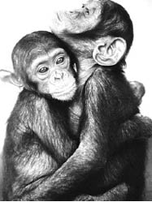

7. BÖLÜM
DOKUNMANIN GÜCÜ
İletişim, dokunmayla başlar.
Dokunma, dünyayla kurduğumuz en temel iletişim aracı olarak tanımlanmıştır.400Öyle temel bir iletişim biçimidir ki; gebeliğin üçüncü ayında kürtajla alınan fetüs, ağzının kenarına dokundurulan saça refleks olarak tepki vermektedir.401Yani insanda, o kadar erken dönemden itibaren ortaya çıkan bir duygudur.
Bebek doğduğu andan itibaren karmakarışık bir dünyayla baş başadır. İçinde huzurlu olduğu sıcak ve ıslak anne karnından ayrılmıştır. İlk defa gerçek anlamda açlık hissetmektedir ve bunun için besin alabileceği kordon artık kesilmiş durumdadır. Artık kolay yemek yoktur. Üstelik bedenine sarılan kumaş oldukça rahatsız edicidir. Çaresizlik içerisinde ağlarken, önce annesiyle göz göze gelir. Bu esnada bebek, annesinin göğsünün üstüne yerleştirilir, çünkü ancak böyle sakinleşir.402Bebek ilk iletişimini dokunma sayesinde kurmuştur artık.
Yeni doğan, kendi varlığı ve dış dünyanın varlığı arasındaki farkı bilemez. Dünyayı ancak dokunarak keşfedebilir. Örneğin annesine dokunduğunda sadece birisine dokunma hissini duyar. Kendi varlığının ise farkında değildir. Ona göre dünyanın tamamı tek parçadır ve annesinden oluşmaktadır. Ancak, kendi ayağına dokunduğunda kendi varlığını fark eder.403Bebeklerde erken dokunma fenomeninin temelleri Spitz404 tarafından oluşturulmuştur. Diğer bazı araştırmacılar da,405 dokunarak uyarmanın duygusal, zihinsel ve psikolojik gelişmeleri açısından önemli olduğunu işaret etmişlerdir.
Dünyaya ilk bakış.406
Çocuklar, toplumun yasaklamaları kendilerine öğretilmezden önce, kendi dünyalarını dokunarak keşfederler. Ebeveynlerine sarılır ve dokunurlar, kendilerine dokunurlar, jenital bölgelerinden haz alırlar, battaniyelerinin dokumasından kendilerine güven duygusu gelir, soğuk, sıcak, yumuşak ya da kaşındıran şeylere dokunurken heyecanlanırlar.407 Şimdilerde kemik gelişimi adına sağlıksız olduğu anlaşılıp genel olarak uygulanmasından vazgeçilen kundağın aslında işlevi, bebeğe anne karnında sarmalanmış olduğu hissini vermektir. Belki o anlamda faydalı olabilecek kundağın, aynı paralelde bir zararı daha vardır. Bebek dünyayı dokunarak ve emerek tanır. Siz bebeğin ellerini ve kollarını sıkı sıkıya bağlar ve bir cenderenin içine hapsederseniz, onun dünyayı tanımak için kullandığı en önemli duyusunu köreltir ve gelişmesine ket vurursunuz.408 Bu bakımdan kundaklama alışkanlığının bırakılması, bebeğin ortopedik gelişiminin yanında, bebeğin dokunma duyusuna ve sözsüz iletişim kanallarına da faydalı olmuştur.
Prematüre bebekler üzerine yapılan bir araştırmada,409yirmi bebek dokunarak uyarılmış,410kontrol grubu olan ve özellikle dokunulmayan bebeklerle aralarında bir karşılaştırma yapılmıştır. Dokunarak uyarma, günde üç kez ve 15’er dakikalık periyotlarla, bebekleri okşayarak ve kollarıyla bacaklarını pasif bir şekilde hareket ettirerek yerine getirilmiştir. Araştırmanın sonuçları ilginçtir. Uyarılan bebekler, diğerlerine göre, günlük olarak ortalama %47 oranında daha fazla kilo almışlardır (25 grama 17 gram); uykudayken ya da uyanık hallerinde daha aktif oldukları gözlenmiştir ve ortalama hastanede kalma süreleri altı gün daha kısa sürmüştür. Bu sürenin kısalığı, ailelerin yaklaşık olarak 3.000 dolar daha az masraf etmelerini sağlamıştır. Bu da, büyüklerimizin “Çocuğu kucağa alıştırmayın!” tarzı yaklaşımlarını boşa çıkarmıyor mu? Nedense yeni bebek sahibi olanlara, özellikle annelere, bebeklerini kucaklarına almamaları, aksi takdirde onların buna alışacakları ve sürekli kucakta tutulmayı isteyecekleri tembihlenir. Bunun bir mantığı yoktur. Bebek, her şekilde kucakta tutulması ve güven duygusu verilmesi gereken bir varlıktır. Kucağa alışması diye bir şey yoktur, o zamanının geldiğini hissettikçe önce emekleyerek, sonra da yürüyerek sizin kucağınızdan uzaklaşacaktır. Bu nedenle yeni çocuk sahibi olan çiftlere, bebeklerini mümkün olduğunca kucaklarından indirmemelerini tavsiye ederim.
Bebeklere dokunmanın, onların gelişimi üzerindeki olumlu etkileri çok büyüktür.
Sözün burasında bir ara vererek, konuyu çok anlaşılır kılan bir örneği paylaşmak istiyorum. Bu, kendisi de eğitimci olan bir dostumun, kendisiyle ilgili paylaştığı bir özelliği. Onun izniyle adını vermeden yazıyorum.
Hayat, anne memesini emmekle başlıyor elbette. Doğduğumuz anda ilk hissettiğimiz soğuk ve açlıktır. Anne memesinin, açlığı gidermekten öte, elbette birçok psikolojik etkisi vardır. Bunu en güzel şekilde Freud açıklamaktadır. Yani mutlaka, hayatın başlangıcında, dudakların tatmin edilmesi gerekir. Fakat bu arkadaşım, annesinin memesini hiç emmemiş. Bunun belli bir nedeni yok, ama en baştan itibaren annesini emmeyi reddetmiş. Bu da kendi deyimiyle kendisinde dokunmayla ilgili ayrı bir yatıştırıcı ihtiyacı ortaya çıkarmış. Kadife ve benzeri yumuşak kumaşlara karşı bir hassasiyeti var. Daha bebekken, susturamadıklarında, önüne kürk, kadife yastık gibi yumuşak dokular koyarlar ve hemen sustururlarmış. Daha sonra anneannesi bir kadife yastık dikmiş, oyalansın diye. Bu da onun için bir fetiş objesi halini almış ve asla elinden bırakmamış. Okula başlayınca bile yanında taşımış. Beşinci sınıfı bitirdiğinde, annesi artık büyüdüğü gerekçesiyle, yastığını elinden alıp saklamış. Günlerce ağlamış, ateşler içerisinde yataklara düşmüş. Mecburen dokunma fetiş objesini iade etmişler kendisine. Sonra o yastıktan bir daha ayrılamamış. Evlendiğinde yanında götürmüş. Eşi, gece uyurken bile yastığını okşadığını, ona dokunduğunu gördüğünde çok şaşırmış.
Şimdi hâlâ, her heyecanlandığında kadife parçası ya da benzeri yumuşak bir kumaş arıyormuş. Hiç bulamazsa, cilalı başparmağını dudaklarına sürtüyormuş. Evinin her yanı kadife yastıklarla doluymuş. Kendisine yakın hissetmediği hiç kimsenin, kendisine dokunmasından hoşlanmıyormuş. Dokunmanın ciddiyetini anlayabiliyor musunuz? Sizin de yok mu, en yakınlarınıza bile anlatamadığınız, dokunmayla ilgili saplantınız? Sizi rahatlatan bir dokunma biçimi?
Dokunmanın etkisi, doğmamış bebekler üzerinde bile söz konusudur.
Yukarıda anlattığım dostum, bir şeyi daha paylaştı yazmam için. Ablası kendisinden fazla büyük olmadığından, kardeşini kıskanmaması için, onu çok az kucaklarına alıp sevmişler. Yani yeteri kadar dokunulmamış. Hamileliğin aslında 12 ay olması gerektiği, fakat evrim nedeniyle 9 aya düştüğü, bu nedenle bebeğin daha 3 ay kendini anne karnında gibi hissetmesi gerektiğini iddia eden yazarlar var. Bu nedenle, bebeklerin 3 ay daha, sürekli kucakta tutulması gerekiyor neredeyse. Bunun eksikliğinin ne demek olduğu bu örnekte anlaşılmıyor mu? Hayat boyu sürüp giden bir dokunma ihtiyacı ve tüm hayatı etkiliyor.
Benzer bir örneğe, bir köşe yazısında rastladım. Ertuğrul Özkök, İtalya’da ünlü bir modaevinin sahibi olan bir kadından bahsediyor:411
“Maria Giovanna Paone. 40’lı yaşlarında tipik bir İtalyan kadını. Babasından aldığı klasik terzi geleneğini hâlâ sürdürüyor. Ona dair çok ilginç bir şey öğreniyorum. Meğer Maria Giovanna, akşamları yatakta yanına kaşmir bir kumaş alırmış. Onu okşamadan uyuyamazmış.”
İkinci bölümde yer alan Dublin Yetimhanesi’nde, dokunulmadığı için hayatını kaybeden çocukları, bu anlamda bir kez daha hatırlayabiliriz.412O zor yılların zavallı çocukları, acaba neden hayatlarını kaybettiler? Yetimhaneler, anne baba sevgisinden uzak, kalabalıklar içinde yalnız, saçları okşanmayan, sırtı sıvazlanmayan, yani dokunulmayan çocukların sözde yuvasıdır. Yetimhanelere giden her yetişkinin etrafını, oradaki çocuklar sarar ve hepsi de ellerine dokunmak ve tutmak isterler. Kendileriyle ilgilenen öğretmenleri ve yetimhane görevlileri ne kadar yakın olmaya çalışsalar da, doğal olarak bire bir teması, aile gibi sağlayamazlar. Dokunmak, yeme içme kadar önemlidir.413 “Dokunma, bir insana kısa yoldan, ‘Sen benim için önemlisin, seni asla bırakmayacağım’ mesajını verir. Hiçbir söz, bu mesajı dokunmak kadar etkili ifade edemez.”414 Bu mesajı alamayan çocuklar, bu eksikliklerini karşılaştıkları yetişkinlere dokunarak gidermeye çalışırlar.
Bebek (ve onun limbik sistemi), duygusal olarak “hassas” anne teması da dahil olmak üzere yeterli sosyal ve fiziksel uyarana ihtiyaç duyar.415 Limbik sistem duygusal uyarana o kadar ihtiyaç duyar ki, çocuk yaşamının ilk yılında ayrım gözetmeksizin sosyal ilişki arar ve yabancılar dahil yaklaşan herkese gülümser. Bu duygusal uyaranların belki de en önemlisi dokunmaktır.
Dokunmanın Olumlu Etkileri
Dokunmak, ama doğru zamanda ve doğru şekilde dokunabilmek, çok önemli bir beceridir ve karşısındaki insana, kendisini çok iyi hissettirecek motivasyonu sağlayabilir. Bunu yapabilen kişiler, her ortamda sevilir ve istenir. Bu kişiler iyi dostlar ve iyi yöneticilerdir. İnsanın desteğe en fazla ihtiyaç duyduğu anda, omzunda sıcaklık veren bir el hissetmesi paha biçilemez. Gözler ruhun pencereleri ise, dokunmak da duyguyu aktaran organik bağlardır. Ağlayan birini teselli etmenin en iyi yoludur dokunmak, beden temasını hissettirmek. Çocuklar yere düştüğünde ya da bir yerleri acıdığında, büyükleri orayı öperler ve çocuk kendisini iyi hisseder. Aslında yetişkinlerin de bu anlamda pek farkı yoktur. Hayat koşusunda, tökezleyen, düşen büyükler, öpülmeseler de bir ten temasına, bir dost dokunuşuna ihtiyaç duyarlar. Sarılma ve dokunma yoluyla sakinleştirme davranışı; ebeveyn-çocuk ilişkisinden yetişkinlere geçer.416Askerler gibi son derece katı bir mesleğin çalışanları bile zaman zaman arkadaşının göğsünde rahatlamaya ve sakinleşmeye ihtiyaç duyar. Bu davranışlar, temelde birçok kültürde benzerlik gösterir ve şempanzelerle birlikte bizlere yakın olan hayvan türlerinde de benzer davranış biçimlerine rastlanması bu davranışların doğuştan geldiğini göstermektedir.
Dokunma duygusu, dokunulmak, vücutta ciddi hazlara yol açar. Dokunmak, cinselliğin ve yakın ilişkinin temelini oluşturur. Bunun nedeni, dokunmanın vücutta sağladığı oksitosin hormonudur.417Dokunmak sadece oksitosin hormonunun oluşumunu tetiklemez; bu hormon dokunma ve dokunulma arzusunu ortaya çıkarır. Sonuçları son derece keyiflidir. Oksitosin, dokunan kişiye karşı iyi duygular beslememizi sağlar ve aileler, sevgililer, akrabalar, arkadaşlar arasındaki bağları güçlendirir. Yüksek düzeydeki oksitosin, cinsel algıyı ve testosteron hormonunun üretimini artırır.
Dokunma, yakınlık boyutlarının içerisinde yer almaktadır418 ve bu boyutların en önemlisidir. Sosyal etkileşim kısa mesafede gerçekleştiğinde, dokunmanın sıklığı ve boyutu yaklaşma ve dolayısıyla hoşlanmanın göstergesi olarak kullanılabilir.419Araştırmalara göre, hoşlanılan kişilere daha fazla dokunulurken, sevilmeyen kişilere daha az dokunulur. İnsanlar hoşlanmadıkları kişilere ve nesnelere dokunmak istemezler; hatta hoşlanmamanın boyutu arttıkça dokunmak zorunda kalmak ciddi bir eziyete dönüşebilir.
Dokunma, psikiyatri hastalarının hemşirelere karşı olumlu yaklaşımlarını ve konuşmalarını artırır.420Hemşireler tarafından konuşma esnasında, belli belirsiz dokunulan hastalar, kendilerini o hemşirelere karşı daha yakın hissetmektedir. Yine psikiyatrik hastalar, danışmanlık seanslarında dokunulduğunda, kendini açma süreci hızlanır.421Bu konuda yürütülen bir çalışmada, katılımcıların kendisiyle dokunma yoluyla etkileşime geçen işbirlikçiyi, sadece konuşarak ya da görerek etkileşime geçenlerden daha olumlu olarak tanımladıkları tespit edilmiştir.422/423
Yapılan araştırmalar,424uyum sağlamak (sıcaklık, coşku ve ilgi iletmek) amacıyla bir araya gelen sözsüz davranışların gülümseme, onaylayıcı baş sallama, uygun bir şekilde dokunma, bir dizi yakınlık davranışı ve doğrudan göz kontağını içerdiğini belirtmektedir. Kısacası dokunma, diğer yakınlık davranışlarıyla birlikte kullanıldığında kişiler arası iletişimi kolaylaştıran, güçlendiren ve insanları kaynaştıran bir iletişim biçimi olarak ortaya çıkmaktadır. Kaldı ki bu yakınlaşma yalnızca insanlar arasında da geçerli değildir. Hayvanlarla olan iletişimde de dokunma sıklıkla kullanılır. Biniciler, atların boyunlarını okşayarak iletişim kurarlar. Pozitif köpek eğitiminde dokunmak ve okşamak çok önemlidir. Okşamak ya da sırtını sıvazlamak bir ödül olarak hayvana benimsetilir ve istenilen hareketi her yaptığında sırtı sıvazlanır. Kediler, boyunları sıvazlandığında bundan çok keyif alır ve bu mırıltılarından anlaşılır. Dokunmak, hayvanları sevdiğimiz duygusunu onlara geçiren, çok önemli bir araçtır.
Kore Savaşı’nda birbirini teselli eden askerler.425

Şempanzelerde dokunma davranışı.
Dokunma, sözel iletişimin sorunlu olduğu ya da hiç olmadığı durumlarda, çok etkili bir iletişim biçimi olabilir. Bu durumlardan birisi, felç sonucu konuşma yeteneğini yitiren insanlardır.426Felç, insanlarda, algılama, anlama, hareket ve iletişim bozukluğuna neden olabilir.427Lisan bozukluğuna, afazi (konuşma yitimi) adı verilir ve anlama, ifade etme, okuma ve yazma kusurları olarak karşımıza çıkar. Afazinin en sık rastlanan sebebi, felçtir.428Bu hastalarla ilgilenmede, sözsüz iletişimin önemi büyüktür. Dokunma, hastaları anlama şansı yaratır.429Duygular, fiziksel temasla iletilir. Bakıcılar, genellikle bu hastaların ellerini tutarlar ve yanaklarına temas ederler. Yapılan bir araştırmada, bakıcı şu sözlerle durumunu ifade etmiştir:430
“Hasta bana dokunduğunda, örneğin koluma, o zaman içimde birçok şey hissederim. Hasta bana sarılabilir ve ağlayabilir, işte o zaman doğru şeyi yaptığımı anlarım. Onun elini tutarken, aramızdaki bağlar güçlenir ve böylece iletişim kurmak kolaylaşır.”
Siz de bunu deneyin. Hasta ya da yaşlı bir yakınınızı ziyarete gittiğinizde; eşiniz üzgün olduğunda; çocuğunuz yere düşüp ağlamaya başladığında, hiç konuşmadan ellerini tutun ve göz teması kurmaya çalışın. Beyninizdeki ayna nöronları, onun ne hissettiğini size de hissettirecektir. Gözler ve eller, atalarımızın kullandığı en eski iletişim biçimidir. Karşınızdakinin ne kadar rahatladığını görecek ve onu mutlu etmenin hazzını yaşayacaksınız.
Dokunmanın Olumsuz Etkileri
Dokunmanın yukarıda sayıldığı üzere birçok olumlu etkileri olduğu gibi, bir o kadar da olumsuz etkileri sayılabilir. Bunlar, dokunulan bölgeye göre değişebildiği gibi; dokunmanın zamanlaması, tarzı, şiddeti, kimin tarafından dokunulduğu, dokunan ve dokunulan kişinin cinsiyeti gibi konularda farklılık gösterebilir. Karşısındaki kişiyi kavga etmeye zorlamak isteyen biri, onu kızdıracak şekilde ve rahatsız olabileceği yerlerine dokunabilir. Gerçek anlamda samimi olunmayan kişiye yönelik yapılacak bir el şakası, çok ters bir şekilde karşılık bulabilir.
Dokunarak iletişim kurmak, doğru yer ve zamanda, doğru insanlar arasında gerçekleşmezse, gerginlik ve huzursuzluk yaratabilir.431Ayrıca, insanlara vurmak, tokat atmak, kolunu kaçamayacağı şekilde sıkmak, etini sıkıştırmak tarzındaki dokunma hareketlerinin de kişide gerginlik ve öfke yaratacağı kesindir.432 Bu tür hareketler yetişkinlerden daha çok gençler arasında daha fazla meydana gelmektedir.
Duygu ifadelerinden tiksinme duygusu anlatılırken, iğrenç, sümüksü yapıda bir şeyin dokunuşunun kişiyi tiksindirebileceği örnek olarak verilir. 433Burada dokunulan aracın yapısının ya da durumunun da, olumsuzluk yaratabileceği anlatılmaktadır. Kirli olduğu görülen ya da inanılan bir elle kişiye dokunmak, olumlu olması beklenirken son derece olumsuz bir etki yaratabilir. Bu tarzda bir dokunuş, dokunan kişiye yönelik olumsuz bir düşüncenin gelişmesine neden olabilir ve bu önyargı, iletişimin geleceğine son derece olumsuz bir önyargı katabilir.
Pis olduğuna inandığımız kişilerin, pis olarak nitelendirilen işlerle uğraşanların ve hatta sevmediğimiz kişilerin dokundukları yerlere ya da eşyalara dokunmak zorunda kalmak da insana eziyet verir. Spor salonlarında bu sorun anti-bakteriyel sıvılarla aşılır. Normalde basit bir silmeyle mikroplardan ne kadar arındıracağı tartışılır olan bu sıvıların en başta gelen işlevi psikolojik rahatlama ve kişiselleştirme hissidir. Güzel kokunun nasıl bir hijyen duygusu verdiği daha önce aktarılmıştı. Bu koku, günde yüzlerce kişinin kullandığı spor aletinin temiz ve kişisel olarak algılanmasına neden olur. Bu tür yerleri çalıştıran kişilerin akıllarından çıkarmamaları gereken bir konudur bu.
Salgın hastalıklara karşı korunmasız olduğumuz inancı, dokunmaya karşı önyargı oluşturabilir. Çevremde her el sıkıştığında, hatta el sıkıştığı kişinin yanında, derhal eline anti-bakteriyel jel süren kişiler görüyorum. Yabancılar arasında bu çok yaygın bir davranış. Üstelik bunun ne kadar kaba bir hareket olduğunu ve karşısındaki kişiyi ne kadar kırabileceğini de hesaba katmıyorlar.
Bir arkadaşım, koçluk eğitiminde, bilinçli bir şekilde sürekli kendisine küçük ya da büyük dokunuşlar yapan bir eğitmenden bahsetmişti. Adam, kadının kendi işini elinden alabilecek bir durumda olduğunu fark ediyor ve buna karşılık üstünlük kurmak ve ezmek için bir sonraki bölümde anlatılacak olan statü kurma amaçlı dokunuşlarda bulunuyor. Ara sıra arkadaşım iyi bir cevap verdiğinde, omzuna bastırıyor ya da küçük dokunuşlar yapıyor ve çok iyi bir cevap olduğunu söyleyerek sözde motive ediyor. Bunun sonucunda da elbette son derece antipatik bir durum ortaya çıkıyor ve en sonunda eğitmeni ikaz etmek durumunda kalıyor. Öğrenilen sözde beden dili hareketlerinin uygunsuz bir şekilde kullanılmasının yaratabileceği olumsuz durumlardan biridir bu örnek.
İpucu: Yine kendi başıma gelen bir örneği paylaşmak isterim. Çalıştığım karargâhta, Kanadalı bir albay, benim ilgi alanımda olan bir olayla ilgili bilgi sormak için yanıma geldi. Genel olarak sevimsiz bir portre çizen bu kişi, konuşurken üç kez omzuma hafifçe bastırdı. Dokunma hareketi ne kadar yukarıdan gerçekleşirse, kişi dokunulanın üzerinde o kadar otoriteye sahip demektir (berberleri bunun dışında tutuyorum). Onun da zaten bunu hissettirmek gibi bir derdi vardı. Hareket beni o kadar rahatsız etti ki, sert bir şekilde eline baktım. Doğal olarak o da benim verdiğim sessiz mesajı aldı ve bu hareketi yapmaktan vazgeçti. Bunun ona hiçbir faydası olmadığı gibi; kendisine karşı olan soğukluğum daha da arttı. Dokunduğunuz kişinin üzerinde gerçek anlamda bir otoriteniz yoksa ve bu otoriteyi dokunmak gibi beden dili kitaplarında anlatılan saçma sapan taktiklerle elde etmeye çalışıyorsanız, başarısızlığınızı ben en baştan ilan edebilirim. Hiç deneme zahmetine girmezsiniz böylece.
İnsanlar, dokunarak sahiplik göstermeye çalışırlar. Eşyalar için böyledir; bir şey sizinse dokunma lüksüne sahipsinizdir. Ancak, kadın ve erkek zaman zaman, birlikte oldukları insanlara ya da eşlerine de sahip oldukları bir eşya gibi davranabiliyorlar. Bu da, insanları son derece rahatsız eden, bazen yapan kişiyi oldukça komik gösteren bir yaklaşımdır. Bilinen bir gerçektir; kadın sahiplik yönünde yaptığı dokunma davranışını daha kurnaz ve belli belirsiz bir şekilde gösterirken; erkekler bele sarılmak, omzuna dolanmak gibi daha kaba davranışlar sergilerler. Gereksiz zamanda yapılan dokunma davranışının rahatsız etmesine verilebilecek güzel bir örnektir bu. Kişinin özgüvensizliğinden kaynaklanır ve sevimsiz bir görüntü çizer.
Dokunma ile Statü İlişkileri ve Cinsiyet Farklılıkları
Televizyonda haberleri izleyen herkesin alışkın olduğu bir görüntüdür: Bir operasyon vs.de gözaltına alınarak ekip aracına bindirilmesi sırasında, kolluk mensubu, polis-jandarma, zanlının kafasına bastırır. Çoğu kez, üstelik kameraların önünde dahi tekrarlanan, hatta bazen özellikle önünde tekrarlanan bir görüntüdür bu. Eğer zanlı direniyorsa, mecburiyetten yapılır; bu kolluğu ilgilendiren kısmıdır. Ancak, herhangi bir direniş olmadığı zamanlarda da kolluğun bunu yaptığı görülür. Bununla ilgili olarak, İçişleri Bakanlığı’na yapılan başvurular ve açılan soruşturmalar dahi vardır.434Bu görüntüler, genel olarak kamuoyunda tepki alan müdahalelerdir. Hayatı boyunca kendi kendine arabasına binmiş olan bir profesörün kafasına bastırarak otomobile bindirilmesi, salt yardım bahanesiyle açıklanmaktan oldukça uzak görünmektedir.
Ben bunun nedenini anlamaya çalışırken, internette yaptığım küçük bir araştırma, bu konuda kafası karışık olan başka insanların da varlığını göstermiştir. Örneğin Uludağ Sözlük’te, “Arabaya binerken elini zanlının başına koyan polis” başlığı altında yapılan tanımlar bu konudaki kafa karışıklığını işaret eder tarzdadır:435
“Polisliğin en önemli görevlerinden olan zanlıyı polis arabasına bindirirken kafasını el yordamıyla aşağı doğru bastırmak işini yerine getiren cengâver polisimizdir. Sanıyorum bu polis reflekslerinden bir tanesi. Adamlar şüpheliyi o arabaya bindirirken mutlaka eller o kafaya gider. Hayır, yani adam kafasını eğmeyi bilmiyor mu? Sen adamı eğmesen o önünü göremeyip çarpacak mı arabaya? Bulaşıcı mıdır nedir anlamadım ki? Emekli polis dedem sevgi gösterisinde bulunup iki saniye başımı okşarken bile kafamı eğip bana zanlı muamelesi yapıyor. #6131920 (sufro de korason, 25.09.2009 01:37).”
“Senin tepende artık kanunun eli var hissini karşı tarafa hissettirmek isteyen polis tipidir. #12393589 (vistapro, 11.07.2011 11:43).”
Kolluğun gözaltına alırken şüphelinin kafasına bastırması.
Daha sonra sözsüz iletişimde dokunmanın ilettiği mesajlar üzerine yaptığım araştırmalarda, yukarıdaki ikinci tanımın doğru olabileceğini ve aslında kolluğun zanlı üzerinde baskı ve otorite kurmak ve statü farkını iletmek amacıyla başını ellediğini fark ettim. Çünkü dokunmak statü ile doğrudan bağlantılı bir konudur. Gözaltına alınanın statüsü her ne olursa olsun ve gözaltına alınan kişi her kim olursa olsun, kolluk personeli o kişinin başına dokunarak durumunu hatırlatma, statüsünün o an itibariyle kolluğun statüsünden düşük olduğunu gösterme amacıyla kafasına bastırdığını değerlendirmekteyim. Başa dokunmak, bize büyükleri hatırlatır. Büyüklerimiz, başımızı okşarlar, başkalarının dokunmasına ise izin verilmez. Bu, dokunan kişi ile aradaki iletişime bağlı olmakla beraber dokunulan kişide rahatsızlık yaratabilir.
Tabii yukarıdaki örneğin olumlu ya da olumsuz yönlerini de bir bütün olarak değerlendirerek, meslektaşlarımıza da kendi çıkarttığımız sonuçları da aktarmamız gerekir. Bana göre dokunma ya da mesafe işgaliyle ifade alma, statü gösterme ve baskı altına alma çabaları, amaçlanandan çok farklı bir şekilde sonuç verebilir. Yapı itibariyle ataerkil ailelerde büyümüş, iş yaşamında da genelde ezilmiş kişiler için bu yöntem bazen işe yarayabilir. Polisin otoritesini hissettirmesi, kimi zaman kişilerin daha kolay çözülmesine ve soruşturmanın kolaylaşmasını sağlayacak birtakım sonuçlara varmasına sebep olabilir. Fakat kişinin böyle bir altyapısı yoksa; özellikle iş yaşamında ve özel hayatında statü sahibi bir kişiyse, kişisel alan işgali bölümünde de anlattığım gibi, bu hareket tarzları kişinin tamamen kilitlenmesine, etrafına psikolojik bir duvar örmesine ve tüm uyaranlara karşı kendisini kapatmasına neden olabilir. Kişilik haklarıyla da uyuşmayan bu tür yaklaşımların artık sona ermesi gerektiğini değerlendiriyorum.
Derimiz ve Verdiği Mesajlar
Dokunma duyumuzun organı, derimizdir. Derimiz tüm vücudumuzu kaplar ve kapladığı alan bakımından en büyük organımızdır. Deri, organlarımızın büyük çoğunluğunu altında saklar ve bizim dışarıya açık yüzümüzü oluşturur.
Derimiz, gün boyunca birçok mesaj verir ve buradan saptanacak bilgi oldukça kıymetlidir.436 Deri öncelikle kişinin sağlık durumuna ilişkin çok ciddi veriler iletir. Vücudu susuz kalan bebeklerin rahatsızlığı, derilerinden anlaşılır. Ateşi olanların renginden rahatsızlığı dışına vurur. Şüpheli ölümlerde deri rengi, kişinin zehirlendiği, oksijensiz kaldığı, boğulduğu gibi birçok olayın sinyallerini verir ve adli tıpla uğraşanlar için kıymetli bilgilerdir bu.
Viral enfeksiyonlar, örneğin uçuklar da önemli ipuçları sağlar. 2. Dünya Savaşı’nda, Çöl Tilkisi adı ile bilinen, Almanların ünlü generali Erwin Rommel, bir haber filminde, dudağının üzerinde ateşten kaynaklanan kocaman bir uçukla görüntülenmişti. Amerikan istihbarat kaynakları, bunu Rommel’in artık yorgun ve bitkin olduğu, bağışıklık sisteminin zayıfladığı ve savaş şartlarına daha fazla dayanamayacağı şeklinde yorumladılar. Gerçekten de kısa bir süre sonra Rommel’in ev istirahatına yollandığı öğrenildi. Halktan saklanan bir gerçek, derisi sayesinde su yüzüne çıkmıştı.437
Derimiz, içdünyamızı, yani duygularımızı da açık eder. Söylediğimiz bir şeyden utandığımızda, yüzümüz kızarır. Birisine yakınlık hissettiğimizde yine bu yüzümüzün rengine yansır. Bu durumda vücudumuz ısınır ve bu ısınma dışarıdan da anlaşılabilir ya da hissedilebilir. Kadınların yumurtlama dönemlerinde vücut ısıları bir derece kadar yükselir ve 37’nin üzerine çıkar. Serin bir günde bunu hissetmek de mümkündür.
Öfkelendiğimizde, kan yüzümüzden çekilir ve kavgaya hazırlanmak için büyük kaslara doğru yönelir. Korku durumunda ise tüm vücuttan çekilir ve kaçmak için bacaklarda toplanır. İki durumda da kişinin yüzünün rengi kaçar. “Korkudan yüzü kâğıt gibi oldu!” deyimi, bu gerçeği anlatır.
Deride terleme görünümü, eğer sıcaklık ya da kıyafetlerle ilgili değilse, stres altında olmanın işaretidir. Kişi bir konuşma esnasında, örneğin kolluk tarafından ifadesi alınırken, referans hareketlerden saparak belli sorular sorulduğunda terliyorsa, bu görüntü kişinin stres altında olabileceğini gösterir. Bu durumda kişinin yalan söylediği ihtimali akla gelebilir ve kişiler bu izden ilerlemeye devam eder.
İnsanların yaşam tarzları ya da meslekleri de derilerinden anlaşılabilir. Açık havada, örneğin tarlada ya da inşaatlarda çalışanların derisinin rengi yanıktır ve dış etkenlerden dolayı yüzleri yıpranmıştır. Diğer yandan ofislerde çalışan insanların ten rengi solgundur ve yıpranmamıştır.
El sıkışırken kişilerin avuç içi de önemli mesajlar verir. Dışarıda yıpratıcı işlerle çalışan insanların elleri nasırlı, pürüzlü ve yara bereli olur. Ofis işlerinde çalışanların ise elleri genellikle yumuşak, nasırsız ve bakımlıdır.
Örnek Olay: Soruşturmasını yaptığım bir cinayet davasında, kadın yüzüstü, boynundan bastırılarak suda boğulmuş ve vahşice öldürülmüştü. Kadın boğulurken adamla mücadele etmiş ve tırnaklarının arasında deri parçaları kalmıştı. Katil eğer sağ elini kullanıyorsa sağ elinde; sol elini kullanıyorsa sol elinde tırnak izleri olmalıydı. Zanlıyı ilk tespit ettiğimizde baktığım yer elleri ve bilekleri olmuştu. Gerçekten de zanlı sağ elini kullanıyordu ve sağ elinin üzerinde derin tırnak izleri vardı. İzlerin nedenini sorduğumda, bir gün önce arabasının tamponunu değiştirirken elinin yaralanmasına bağlamıştı ancak bu son derece anlamsız bir sebepti. Sonunda katil olduğu ispatlandı ve cinayetten hüküm giydi.
Statüye İlişkin Notlar
Etkileşim içerisinde olduğumuz ya da olmadığımız insanlara statümüzü sözlü olmaktan çok, çoğu kez sözsüz işaretler yardımıyla bildiririz. Ofisimiz, oturduğumuz masanın büyüklüğü, arkamızda duvar olup olmaması, giydiğimiz giysinin markası, kullandığımız cep telefonu ya da otomobil, oturduğumuz semt, kartvizitler ve daha birçok şey statü belirtir. İşyerlerinde, statü gösteren bazı sözsüz davranışlar söz konusudur.438Örneğin, bir işyerinde, ziyaret edeceği odanın kapısını çalma ve bekleme süresi önemlidir. En çabuk içeri giren ya da en uzun sürede cevap veren kişi yüksek statülüdür. Büyük Patron çalışanının odasına habersiz gelir, çalışanı ise kapıda girmek için izin ister. Eğer odaya girdiğinde yüksek statülü kişi telefonda ise giren yavaşça odadan çıkar. Tersi durumda ise, içeri giren yüksek statülü kişi, statüsünü belirtircesine ayakta dikilir ve davranışıyla konuşmayı sona erdirmek için zorlar. Bunlar, hiç konuşmadan statüyü belli eden davranışlardır.
Bazı yazarlara göre,439sözsüz iletişimin beş önemli işlevi vardır: Bilgi sağlamak, etkileşimi düzenlemek, yakınlık iletmek, toplumsal denetlemeyi sağlamak ve görev ya da hizmet hedeflerini kolaylaştırmak. Bunlardan, yakınlık iletmek ve toplumsal denetlemeyi sağlamak kişisel ilişkilerin merkezindedir. Herhangi bir ilişkiyi anlamanın yolu; gücü kimin kullandığı ve sözsüz davranışlarla ne şekilde iletildiğini bilmekten geçer.440Sözsüz iletişim, fiziksel görünüm (giysi, boy vb.), dokunma, bakış, beden hareketleri ve alan kullanımı gibi davranışlarla ifade edilen güçle ilintili mesajlar için zengin bir kaynaktır.441Dokunmanın, sözsüz iletişimde statü belirtmeye ilişkin, çok ciddi bir önemi vardır. İşyerinde genellikle kimse üstü pozisyonunda olan kişiye izni olmadan dokunamaz. Ama o kişi, istediğinde çalışanının sırtını sıvazlayabilir. Çalışırken, bir aferin dokunuşu, çoğu zaman çalışanları rahatsız etmez.
Dokunma ve statüyle ilgili yapılmış çok ilginç çalışmalar vardır. Örneğin, doktorların hastaları üzerindeki güç ve statü farklarını inceleyen bir çalışmada,442doktorların hastaları üzerindeki gücünü dokunarak ilettikleri ortaya konulmuştur. Bu çalışmada, doktorların çalışma teknikleri incelenmiş ve hastaların doktorlar hakkındaki duyguları sorgulanmıştır. Doktorların muayene etmeleri görevle ilgili olsa da, hastalara dokunurken ilettikleri sosyal mesajlara, hastalar tepki vermektedirler. Muayene için gelen herhangi bir kişiye dokunmak, oldukça önemli bir güçtür. Gerçekte yetenekli doktorlar, bu farklı güçlerini “iyileşme sürecini” teşvik etmek amacıyla kullanmaktadırlar. Şifa dokunuşu adı verilen hassas bir dokunuşla, sözsüz teşvik ve yüksek statülü doktorun olumlu beklentileri; endişeli ya da şaşkın hastanın cesaretlendirilmesi, motive edilmesi ve güveninin kazanılmasına yardımcı olabilir. Yine aynı çalışmada, doktor-hasta ilişkisinde gerçekleşen olumsuz etkileşimler; doktorun hastaya doğru yönelmemesi; geriye doğru yaslanması; etkileşim esnasında daha çok hastanın doktora bakması; doktorun kollarını kavuşturması ve hastaya gereksiz yere daha sık dokunması olarak sıralanmıştır.443
Doktorun şifalı dokunuşu.
Doktorun şifalı dokunuşları, bazen acı veren dokunuşlar halini alabilir. Kadınların, hem fiziki, hem de psikolojik olarak eziyete dönüşen jinekolojik muayenelerini anlattıkları bloglar, internette rahatlıkla bulunabilir.444Dokunma anlamında son derece hassas bir iş yapmakta olan doktorlar, bu konuda hastaların hassasiyetlerini çok dikkatle değerlendirmeli ve ona uygun hareket etmelidirler. Elbette işini hakkıyla yapan büyük bir doktorlar topluluğu arasında sayıları çok az kalsa da, bu tür bir doktorla karşılaşmak bir kadında uzun yıllar boyunca üzerinden atamayacağı bir travmaya neden olabilir.
Sözsüz iletişimde cinsiyet farklılıkları konusu, sosyal psikologların uzun bir süredir ilgilenmelerine karşın tam anlamıyla anlaşılamamıştır. Bu konuya açıklık getirmek amacıyla bazı araştırmacılar biyolojik, bazıları sosyal değişkenleri belirleyici olarak ele alan çalışmalar yapmışlardır.445Bu alanda cinsiyetler arası davranış farklılığını açıklayabilmek için birçok teori ortaya atılmıştır. Bu teorilerden bir tanesi, dokunmanın statü gösterme aracı olduğu ve kadınlar erkeklere göre daha düşük statüde olduğu için erkekler tarafından daha fazla dokunulduğu olmuştur. Teorinin açıklanmasında en fazla ses getiren ve birçok çalışmaya fikir veren kişi, araştırmacı Nancy Henley’dir. Henley, çalışmaları sonucunda; sözsüz iletişimdeki cinsiyet farklılıklarına, erkekle kadın arasındaki statü farklılıklarının (ya da güç ve baskınlık) neden olduğunu ileri sürmüştür.446Ayrıca, kadınların ve erkeklerin davranışları ile yüksek ve düşük statülü kişilerin davranışlarının paralel olduğunu ortaya koymuştur.447Yani, yüksek statülü kişiler nasıl astlarına daha rahat ve teklifsizce dokunuyorlarsa; aynı şekilde erkekler de kadınlara statü farklılıkları nedeniyle dokunmaktadırlar.
Henley, kamuya açık alanlarda dokunan insanların sosyoekonomik statülerini (SES) incelemiş ve daha yüksek SES seviyesine sahip insanların karşılarındaki insanlara göre daha fazla dokunduklarını değerlendirmiştir.448Yine aynı çalışmasında yüksek statülü insanların dokunma ayrıcalığının olduğunu, bunu yüksek statülerini korumak amacıyla yaptıklarını belirtmiştir.449Bu çalışmalardan hareketle; kadınlar araştırmanın yürütüldüğü dönemde ve kültürde, daha düşük statülü kabul edildiklerinden, erkeklerin statülerini dokunarak ifade ettikleri değerlendirilmiştir. Örneğin, erkek patron kadın çalışanlarına, statüsünü kullanarak, onların dokunduğundan daha fazla dokunmaktadır.
Sonuç olarak, Henley, kadınların statüsünün erkeklerden daha düşük olduğu değerlendirmesinden hareketle, erkeklerin kadınlara kadınların erkeklere dokunduğundan daha fazla dokunduğunu belirtmiştir. Bir başka ifadeyle, yüksek statülü kişilerin bu statülerini ifade etmek ve devamlılığını sağlamak amacıyla dokunma ayrıcalığının olduğunu ve erkeklerin statüsünün kadınlara göre daha yüksek olduğundan, statünün, erkeklerin kadınlara kadınların erkeklere dokunduğundan daha fazla dokunmak suretiyle ifade edildiğini belirtmiştir.450Ancak, daha sonra yapılan bazı araştırmalar dokunma ve cinsiyet arasında karmaşık bir ilişki olduğunu ortaya koyarak Henley’in fikrini desteklemekten çok zayıflatmıştır.451Yürütülen çalışmalar, bu tarzda bir paralelliğe yönelik bir delil bulamamıştır.452Dahası, bunların sonrasında yürütülen iki çalışmada,453öğrencilere dokunma davranışlarıyla ilgili kayıt tutmaları konusunda eğitim verilmiştir. Bu çalışmaların birinde, kadınların erkeğe dokunma davranışları genel olarak anlamlı bir şekilde erkeklerin kadınlara dokunma davranışlarını geçmiş ve iki çalışmada da, kadınlar erkeklere uyum ve kontrol anlamında daha fazla dokunmuştur. Bugün artık, kadınların sözsüz iletişimi daha fazla ve verimli kullandıklarını; dolayısıyla karşılarındakine daha fazla dokunduklarını biliyoruz.
Henley’in 1970’lerde yürüttüğü araştırmaların sonuçları ile sonrasında yapılan araştırmaların sonuçlarının aynı çıkmamasının sebebinin araştırmaların yapıldığı dönemler arasında kadına verilen önemin ve toplumda kadın statüsünün dramatik bir değişime uğraması olarak yorumlanabilir. Söz konusu araştırmalar Amerikan toplumu üzerinedir ve ilk çalışmanın üzerinden yaklaşık 40 yıl geçmiştir. Bu süre boyunca toplumun kadına bakış açısı ve kadın haklarına bakış son derece değişmiştir. 1950’lerde ve 1960’larda eşiyle arasında bir problemi olan kadın, kendinde ya da evliliğinde sorun olduğunu kabul etmektedir.454O dönemde, kadınların statüsü erkeğin yanında düşük kabul edilmektedir. Çünkü kadının görevi yalnızca çocuk doğurmak ve evi çekip çevirerek mutlu bir yüz ifadesiyle kocasına bakmak olarak görülmektedir. 1900’lerin ikinci yarısından sonra, toplumda kadın işgücü olağanüstü bir hızla artmıştır. Bunda, 2. Dünya Savaşı sonrası azalan erkek işgücü de etken olmuştur. Bu değişim, toplumda kadın algısı ve statüsünde de müthiş bir değişim sağlamıştır.455Kadınlarda statüye bağlı olarak ortaya çıkan dokunma davranışlarındaki değişimin de bu statü algısının değişmesi sonucunda gerçekleştiğinden söz edilebilir.
Bu satırların yazıldığı gün yaptığım bir gözlemi, konunun daha iyi anlaşılması açısından paylaşmak isterim. Katıldığım bir toplantıda, uzun bir masanın etrafında farklı ülkelerden birçok rütbeli asker ile bir sivil kadın çalışan oturmaktaydı. Ben pozisyonum gereği arkalarında gözlemci olarak bulunmaktaydım. Kadının yanındaki İspanyol yarbay, soğuk ve ilgisiz hareketlerle oturmaktaydı. Muhtemelen ortamla çok ilgili değildi. Bir ara konuşma esnasında, kadın (muhtemelen Amerikalı), adamın koluna parmaklarıyla bir an için dokundu. Çok kısa bir süreydi bu. Ancak, adamın davranışları çok büyük oranda değişti. İlgisi kadına yöneldi ve daha fazla onaylayan bir duruş ve sözsüz hareketler yapmaya başladı. Kadın amacına ulaşmıştı. Yine başka bir örnekte, borsa şirketinde danışmanlık yapan bir kadın tanıdığım, inatçı müşterilerini kasıtlı değilmiş gibi görünen küçük temaslarla yola getirdiğini anlatmıştı. Bunlar, dokunma davranışının kişileri yönlendirmede etkin bir araç olarak kullanılabileceğini göstermektedir.
Polonya’da yürütülen güncel bir çalışma, kişilerden bir istekte bulunma sırasında, kola yapılan küçük dokunuşların, kişinin rıza göstermesinde olumlu katkısı olduğu yönündedir.456Bunun tek istisnası erkekler arası dokunmalardır. Bunun, Polonya’nın genel olarak “homofobik” bir ülke olmasının sonucu olduğu değerlendirilmektedir.
ABD’de yapılan araştırmalara göre, erkekler ya da kadınlar, kendi cinslerine dokunmaktan çok, karşı cinse dokunmaktadırlar.457Bununla beraber kadınlar, erkeklere göre, kendi cinslerine daha fazla ve daha samimi bir şekilde dokunmaktadırlar.458 Gerçekten de uluslararası ortamlarda gözlem yaptığınızda, Kuzey Amerikalı ve Avrupalı erkeklerin el sıkışma haricinde birbirleriyle pek fazla temasa girmedikleri görülür. Burada kısmen İtalyanlar, Yunanlılar gibi Akdeniz ülkelerinde farklılıklar görülür. Araştırmalar sonunda yapılan yorumlar, cinsiyetler arası dokunma farklılıklarının, erkeklerin dışarıdan homoseksüel olarak algılanma korkusu, bir başka deyişle “homofobik”459olduğu üzerinedir.460Bu, kadınlar arası ilişkilerde neden kadın kadına temasın benzer şekilde engellenmediği (çünkü kadınlar arası dokunma davranışı daha az eşcinsel temas olarak algılanır) ve karşı cinsle olan ilişkilerde de temasın devam ettiğini (çünkü heteroseksüelliği gösterdiğini) açıklamaktadır.461Bu enteresan yorum, dokunma (ya da dokunmama) davranışını oldukça önemli bir oranda açıklamaktadır. Ancak işin ilginç yanı, ülkemiz de dahil olmak üzere, Doğu’ya gittikçe, erkek erkeğe temasın daha rastlanır olduğu, daha az yadırgandığıdır. Ülkemizde, erkekler karşılaşıp el sıkıştıklarında birbirlerini yanaklarından öperler. Kol kola yürümek tuhaf karşılanmaz. Arap ülkelerinde ise el ele yürümek sıradan bir durumdur. Bu farklılık nereden gelmektedir? Bizler cinsel duruşumuza daha mı fazla güvenmekteyiz de daha rahat davranabilmekteyiz? Bu alanda ülkemizde de özgün çalışmalar yapıldıkça, konuya ilişkin çok daha ayakları yere basan yorumlar yapılabilecektir.
Judith A. Hall, sözsüz iletişimde cinsiyet farkları üzerine yaklaşık kırk yıldır araştırmalar yapan, saygıdeğer bir profesördür. Kendisiyle bu konuda yaptığım yazışmada bana yazdıklarının çevirisini aynen aktarıyorum:462
“Araştırma sonuçları ve bu konudaki klişelere göre, Arap ülkelerinde, erkeklerin birbirlerine halka açık alanda daha fazla dokundukları şeklindeki gözlemine katılıyorum. Benim bu konuya ilişkin hipotezim şu şekildedir: Müslüman ülkelerde, homoseksüellik öylesine güçlü bir tabu ki, homoseksüel insanlar bu eğilimlerini, Batı ülkelerindekilere göre çok fazla bastırmak ve saklamak zorundadırlar. Bu nedenle, homoseksüel bir kişi, toplum içerisinde diğerlerine dokunmaya cesaret edemez. Bu demek oluyor ki, heteroseksüel erkekler, kimsenin böyle düşünmeyeceklerini bildiklerinden, toplum içerisinde daha rahat davranabilmekte ve arkadaşlık hislerini başka erkeklere daha rahat bir şekilde dokunarak ifade edebilmektedir. ABD’de heteroseksüel erkekler, eşcinsel olarak algılanma korkusunu çok daha fazla yaşıyorlar. Ayrıca Arap ülkeleri, insanların daha yakın mesafeden iletişime geçtikleri ve birbirlerine daha çok dokundukları ‘temas kültürleri’ arasında sayılmaktadır. Bunun da erkekler arası iletişim biçimine uyduğu görülmektedir. Ayrıca bu ülkelerde kadınlar çok fazla toplum içerisine de çıkmamaktadır. Türkiye’nin bu konuda, diğer Müslüman ülkelerle karşılaştırınca çok daha özgürlükçü olduğundan eminim. Sanırım bu ülkelerde kadınlar ve erkekler toplum içerisinde çok fazla ayrıştırılmış ve bu da erkek erkeğe olan arkadaşlık bağlarını kuvvetlendiriyor.”
400 Barnett, K. (1972). A theoretical construct of the concepts of touch as they relate to nursing. Nursing Research, 21, 102-110’dan akt. Hertenstein, M. J. (2002). Touch: Its communicative functions in infancy. Human Development, 45, 70-94.
401 Maurer, D. ve Maurer, C. (1988). The world of newborn. New York: Basic’ten akt. Knapp, M. Hall, J. A. (2006). Nonverbal communication in human interaction. 6. baskı. Kanada: Wadsworth, 265.
402 Molcho, S. (2007). Çocuk Beden Dili. İstanbul: Delta Yayınları, 25.
403 Molcho, S. (2007). Age., 26.
404 Spitz, R. A. (1947 ). Hospitalism. The Psychoanalytic Study of the Child. 2:113-117’den akt. Fisher, J. D., Rytting, M, Heslin, R. (1976). Hands touching hands: affective and evaluative effects of an interpersonal touch. Sociometry, Vol. 39, No. 4, pp. 416-421.
405 Montagu, A. (ed., 1971). Touching: The significance of the human skin. New York: Columbia University Press; Morris, D. (ed., 1973). Intimate behavior. New York: Bantam Books’tan akt. Fisher, J. D., Rytting, M., Heslin, R. (1976). Hands touching hands: affective and evaluative effects of an interpersonal touch. Sociometry, Vol. 39, No. 4, pp. 416-421, 416.
406 Fotoğraf sanatçısı Thierry Bouët’in iznizle kullanılmıştır.
407 Fast, J. (1982). Body language, 13. baskı. London: Pan Books, 79.
408 Molcho, S. (2007). Age.
409 Field, T. M., Schanberg, S. M., Scafidi, F., Bauer, C. R., Vega-Lahr, N., Garcia, R., Nystrom, J. ve. Kuhn, C. M. (1986). Tactile/Kinesthetic stimulation effects on preterm neonates. Pediatrics. 77, 654 -658, 654.
410 Tactile/kinesthetic stimulation.
411 Özkök, Ertuğrul (2012). Kumaşın koynuna giren kadınla bir gün. Hürriyet gazetesi internet sayfası, http://www.hurriyet.com.tr/yazarlar/21476066.asp?utm_source=hurriyet&utm_medium=yazarlar&utm_campaign=yazarsonyazi adresinden 20.09.2012 tarihinde erişilmiştir.
412 Joseph, R. (1982). The neuropsychology of development: hemispheric laterality, limbic language and the origin of thought. Journal of Clinic Psychology 44, 3-34; Joseph, R. (1992). The limbic system: emotion, laterality and unconscious mind. Psychoanalytic Review 79: 405-456’dan akt. Joseph, R. (1998). Environmental influences on neural plasticity, the limbic system, emotional development and attachment: A review. Child Psychiatry and Human Development, 29 (3), 193.
413 Cüceloğlu, D. (1995). Yeniden İnsan İnsana. İstanbul: Remzi Kitabevi, 46.
414 Cüceloğlu, D. (1995). Yeniden İnsan İnsana. İstanbul: Remzi Kitabevi, 46.
415 Joseph, R. (1998). Environmental influences on neural plasticity, the limbic system, emotional development and attachment: A review. Child Psychiatry and Human Development, 29 (3), 193.
416 Eibl-Eibesfeldt, I. (1971). Love and hate. The natural history of behavior patterns. New York: Holt, Rinehart and Winston, 130.
417 http://evepeakstantric.wordpress.com/2012/05/17/why-is-touching-nice/ adresinden 10.11.2012 tarihinde erişilmiştir.
418 Mehrabian A. (2007). Nonverbal communication. 2. baskı, ilk basım 1972. London: Aldine Transaction, 24.
419 Mehrabian A. (1981-İlk Basım 1971). Silent messages: Implicit communication of emotions and attitudes. Wadsworth Publishing Company, 23.
420 Aguilera, D. C. (1967). Relationships between physical contact and verbal interaction in nurses and patients. Journal of Psychiatric Nursing 5: 5-21.
421 Pattison, J. E. (1973). Effects of touch on self-exploration and the therapeutic relationship. Journal of Consulting and Clinical Psychology 40: 170-175.
422 Bardeen, J. P. (1971). Interpersonal perception through the tactile, verbal and visual modes. Paper presented at the Meeting of the International Communication Association, Phoenix, Arizona (April).
423 Fisher, J. D., Rytting, M, Heslin, R. (1976). Hands touching hands: affective and evaluative effects of an interpersonal touch. Sociometry, Vol. 39, No. 4, pp. 416-421.
424 Heintzman, M., Leathers, D. G., Parrott, R. L. ve Caims, A. B., 111 (1993), Nonverbal rapportbuilding behaviors effects on perceptions of a supervisor. Management Communication Quarterly, 7 (2), 181-208, 185’ten akt. Spangler, L. (1995). Gender-specific nonverbal communication: impact for speaker effectiveness. Human Resource Development Quarterly, 6, 4, Winter, 409.
425 Eibl-Eibesfeldt, I. (1971). Age., 130.
426 Sundin, K., Jansson, L. ve Norberg, A. (2000). Communicating with people with stroke and aphasia: understanding through sensation without words. Journal of Clinical Nursing 2000; 9: 481–488.
427 Bernspang B., Fugl-Meyer A. R. & Viitanen M. (1988). Perceptualfunction in the elderly and after stroke. Scandinavian Journal of Caring Sciences 2, 75–79.
428 Sundin, K., Jansson, L. ve Norberg, A. (2000). Age., 482.
429 Sundin, K., Jansson, L. ve Norberg, A. (2000). Age., 486.
430 Sundin, K., Jansson, L. ve Norberg, A. (2000). Age., 486.
431 Walker, D. N. (1971). Openness to touching: A study of strangers in nonverbal interaction. The University of Connecticut). ProQuest Dissertations and Theses, 179 Retrieved from http://search.proquest.com/docview/302485811?accountid=7181
432 Knapp, M. Hall, J. A. (2006). Nonverbal communication in human interaction. 6. baskı. Kanada: Wadsworth, 175.
433 Ekman, P., Freisen, W. V. (2003). Unmasking the face. Cambridge: Malor Book, 66.
434 “Polise el bastı soruşturması.” Aktif Haber internet sitesi. http://www.aktifhaber.com/polise,-el-bastı-sorusturmasi-201982h.htm adresinden 19.02.2012 tarihinde erişilmiştir.
435 Uludağ Sözlük. http://www.uludagsozluk.com/k/arabaya-binerken-elini-zanl%C4%B1n%C4%B1n-ba%C5%9F%C4%B1na-koyan-polis/ adresinden 19.02.2012 tarihinde erişilmiştir.
436 Navarro, J. (2012). Nonverbals of skin. Psychology of Today. http://www.psychologytoday.com/blog/spycatcher/201211/nonverbals-the-skin adresinden 11.11.2012 tarihinde erişilmiştir.
437 Navarro, J. (2012). Age.
438 Fast, J. (1982). Body language, 13. baskı. London: Pan Boks, 48.
439 Patterson, M. L. (1983). Nonverbal behavior: A functional perspective. New York: Springer-Verlag’den akt. Noller, P., Feener, J. A. ve Roberts, N. (2005). Nonverbal behavior in couple relationships: exploring the causes and consequences of withdrawal. Applications of nonverbal communication kitabındaki bölümü (ed.), Riggio, R. E. ve Feldman, R. S. Lawrence. New Jersey: Erlbaum Associates, Inc., Publishers, 196.
440 Burgoon, J. K. & Dillman, L. (1995). Gender, immediacy and nonverbal communication. In P J. Kalbfleisch & M. J. Cody (ed.), Gender, power and communication in human relationships, 63-81. Hillsdale, NJ: Lawrence Erlbaum Associates.
441 Guerrero, L., Andersen, P. & Afifi, W. (2001). Close encounters: communicating in relationships. New York: McGraw-Hill.
442 Martin, L. R. ve Friedman, H. S. (2005). Nonverbal communication and health care. Applications of nonverbal communication (ed.), Riggio, R. E. ve Feldman, R. S. Lawrence. New Jersey: Erlbaum Associates, Inc., Publishers, 6.
443 Beck, R. S., Daughtridge, R. ve Sloane, R. D. (2002). Physician-patient communication in the primary care office: a systematic review. Journal of the American Board of Family Practice, 15, 25-38.
444 http://jinekolojiksiddet.wordpress.com/ 28.07.2012 tarihinde erişilmiştir.
445 Andersen, P. (1998). Researching sex differences within sex simi larities: The evolutionary consequences of reproductive differences. In D. J. Canary & K. Dindia (ed.), Sex differences and similarities in communication: Critical essays and empirical investigations of sex and gender in interaction, 83-100). Mahwah, NJ: Erlbaum; Hall J. A. (1984). Touch, status and gender at professional meetings. Journal of Nonverbal Behavior, 20 (1); Henley, N. M. (1977). Body politics: Power, sex and nonverbal communication. Englewood Cliffs, NJ: Prentice-Hall; Noller, P. (1986). Sex differences in nonverbal communication: Advantage lost or supremacy regained? Australian Journal of Psychology, 38, 23-32; Rosip, J. C. & Hall, J. A. (2004). Knowledge of nonverbal cues, gender and nonverbal decoding accuracy. Journal of Nonverbal Behavior, 28, 267-286; Ickes, W., Gesn, P. R. & Graham, T. (2000). Gender differences in empathic accuracy: Differential ability or differential motivation? Personal Relationships, 7, 95-109.
446 Henley, N. M. (1973). Status and sex: Some touching observations. Bulletin of the Psychonomic Society, 2, 91-93; Henley, N. M. (1977). Body politics: Power, sex and nonverbal communication. Englewood Cliffs, NJ: Prentice-Hall.
447 Hall, J. A. (2006b). Nonverbal behavior, status and gender: How do we understand their relations? Psychology of Women Quarterly, 30, 384-391, 384.
448 Hall, J. A. (1996). Touch, status and gender at professional meetings. Journal of Nonverbal Behavior, 20 (1), 24.
449 Dibiase, R. ve Gunnoe, J. (2004). Gender and culture difference in touching behavior. The Journal of Social Psychology, 144-1, 49-62, 50.
450 Hall, J. A. (1996). Age., 23.
451 Hall, J. A. ve Friedman, G. B. (1999), Status, gender and nonverbal behavior: A study of structured interactions between employees of a company. Personality and Social Psychology Bulletin, 25 (9), 1082-1091; Hall, J. A. & Veccia, E. M. (1990). More “touching” observations: New insights on men, women and interpersonal touch. Journal of personality and social psychology, 59 (6), 1155-1162; Jones, S. E. (1986), Sex differences in touch communication. Western Journal of Speech Communication, 50, 227-24; Major, B. (1981). Gender patterns in touching behavior. In C. Mayo & N. M. Henley (ed.), Gender and nonverbal behavior, 15-37. New York, NY: Springer-Verlag; Major, B., Schmidlin, A. M. ve Williams, L. (1990). Gender patterns in social touch: The impact of setting and age. Journal of Personality and Social Psychology, 58 (4), 634-643; Stier, D. S., & Hall, J. A. (1984). Gender differences in touching: An empirical and theoretical review. Journal of Personality and Social Psychology, 47 (2), 440-459; Willis, F. N., Jr. & Dodds, R. A. (1998). Age, relationship and touch initiation. The Journal of Social Psychology, 138, 115-12
452 Hall, J. A. (1996). Age., 25.
453 Jones, S. E. & Yarbrough, A. E. (1985). A naturalistic study of the meanings of touch. Communication Monographs, 52, 19-56; S. E. (1986), Sex differences in touch communication. Western Journal of Speech Communication, 50, 227-241.
454 Friedan, B. (2010). The problem that has no name. The feminine mystique. New York, NY: W. W. Norton & Company, 1963, 1582.
455 Dibiase, R. ve Gunnoe, J. (2004). Age., 51.
456 Dolinski, D. (2010). Touch, compliance and homophobia, Journal of Nonverbal Behavior, 34, 3, 179-192, 179.
457 Major, B., Schimidlin, A. M. ve Williams, L. (1990). Gesture patterns in social touch: The impact of setting and age. Journal of Personality and Social Psychology, 58, 634-643.
458 Major, B. ve Williams, L. (1981). Frequency of touch by sex and race: A replication of touching observations. Unpublished manuscript, State University of New York at Buffalo.
459 Morin, S. F. ve Garfinkle, E. M. (1978). Male homophobia. Journal of Social Issues, 34, 1, 29-47, Winter.
460 Derlega, V. J., Lewis, R. J., Harrison, S., Winstead, B. A. ve Costanza, R. (1989). Gender differences in the initiation and attribution of tactile intimacy. Journal of Nonverbal Behavior, 13, 2 , 83-96.
461 Floyd, K. (2000). Affectionate same-sex touch: The influence of homophobia on observers perceptions. The Journal of Social Psychology, 140, 6, 774-788, 776.
462 Judith H. Hall’un yazdığı 30 Temmuz 2012 tarihli e-posta.